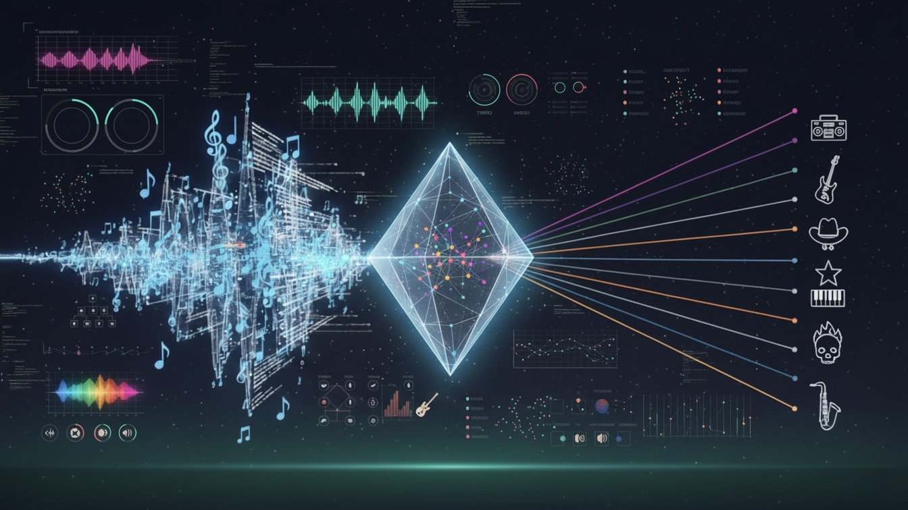
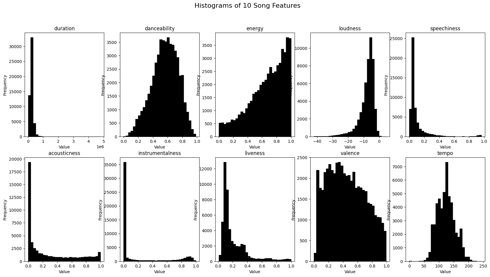
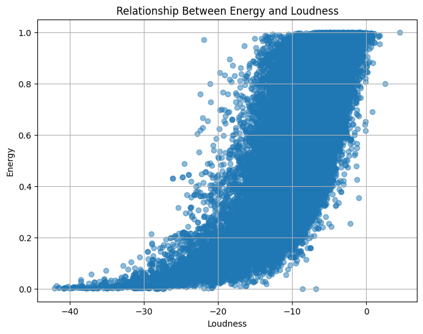
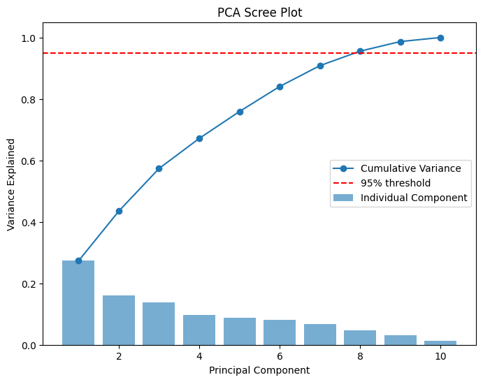
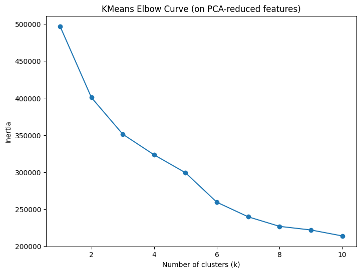

Spotify Popularity & Genre Modeling: EDA → Modeling Pipeline
Tools & Methods: Python (pandas, numpy, scikit-learn), Visualization, PCA/KMeans, Logistic Regression, Decision Trees

Project Summary
I analyzed a dataset of 52,000 Spotify tracks to explore what makes music popular and how audio features group songs. Using Python (pandas, scikit-learn), I combined hypothesis testing, regression, and PCA + clustering to evaluate relationships among 10 audio features and popularity. The result is a clear picture: some patterns (e.g., energy ↔ loudness) are strong, while predicting popularity and key/genre from audio alone is inherently challenging.
Exploratory Data Analysis (EDA)
I inspected feature distributions and correlations across the 10 audio features. Most features are non-normal; a standout relationship is the strong correlation between energy and loudness.

Key Findings
- Explicit vs non-explicit: Explicit songs are more popular on average (35.8 vs 32.8); significant at p<1e-6.
- Major vs minor key: Minor slightly more popular (33.7 vs 32.8); significant at p<1e-6.
- Energy ↔ Loudness: Strong correlation (r≈0.775).
- Predicting popularity: Best single predictor: instrumentalness (R²≈0.021); all features: R²≈0.046.
- PCA & clustering: 8 PCs explain ~95% variance; KMeans suggests ~4 clusters.
- Valence → Mode: Logistic regression AUC≈0.51 even after class balancing → not predictive.
Visuals
1) Energy vs Loudness
Louder tracks tend to have higher energy.

2) PCA Scree Plot
First 8 principal components capture ~95% of the variance.

3) KMeans Elbow Curve
Elbow at k≈4 indicates diminishing returns beyond 4 clusters.

How I Did It
- Pandas + NumPy for cleaning and feature prep
- Statistical tests (t-test, Mann–Whitney) for hypotheses
- Linear models for popularity (R² reporting)
- PCA (retain ~95% variance) → KMeans (elbow ≈ 4)
- Logistic regression (class-balanced) for Mode prediction (AUC reporting)
Challenges & Reflections
- Popularity is multi-factor: Audio features explain little variance (R²≈0.046). Non-audio factors (marketing, artist fame, virality) dominate.
- Feature redundancy: PCA reduced strong correlations (e.g., energy ↔ loudness); 8 PCs captured ~95% variance.
- Clusters vs genres: KMeans clusters overlapped with genres but didn’t map neatly—highlighting limits of math vs cultural labels.
- Limits of simple predictors: Valence → Mode is essentially random (AUC≈0.51); richer features (lyrics, metadata) needed.
Results at a Glance
- Explicit songs more popular (p<1e-6). Minor > Major (p<1e-6).
- Energy–Loudness correlation r≈0.775.
- Best single predictor: Instrumentalness (R²≈0.021). All features: R²≈0.046.
- PCA: 8 PCs ≈95% variance; KMeans elbow ≈4 clusters.
- Valence → Mode logistic regression AUC≈0.51.